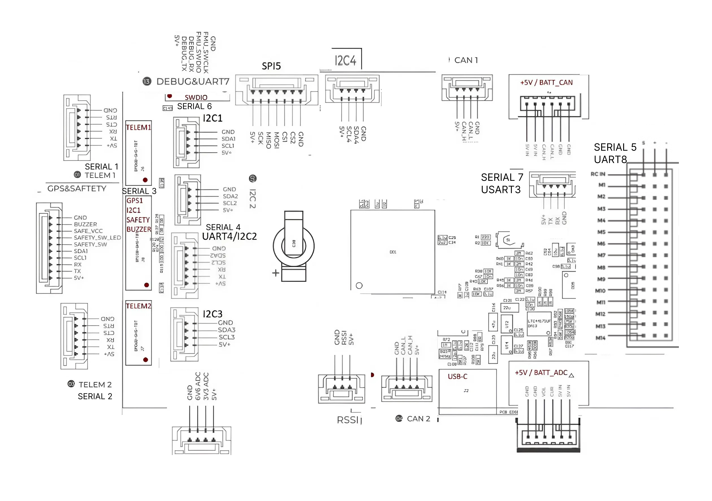

Розпіновка
Усі сигнальні роз'єми — JST GH 1.25 мм.

Серійні порти
TELEM1, TELEM2 — 6 пінів
SERIAL1 і SERIAL2. Обидва підтримують апаратне керування потоком (CTS/RTS) і DMA.
| Пін | Сигнал | Рівень |
|---|---|---|
| 1 | VCC | +5 В |
| 2 | TX | +3.3 В |
| 3 | RX | +3.3 В |
| 4 | CTS | +3.3 В |
| 5 | RTS | +3.3 В |
| 6 | GND | — |
GPS & SAFETY — 10 пінів
SERIAL3. Комбінований роз'єм: GPS, шина I2C1, запобіжний вимикач і зумер. Розрахований на GPS-модулі зі вбудованим компасом, вимикачем і зумером.
| Пін | Сигнал | Рівень |
|---|---|---|
| 1 | VCC | +5 В |
| 2 | GPS1_TX | +3.3 В |
| 3 | GPS1_RX | +3.3 В |
| 4 | I2C1_SCL | +3.3 В |
| 5 | I2C1_SDA | +3.3 В |
| 6 | SAFETY_SW | +3.3 В |
| 7 | SAFETY_SW_LED | +3.3 В |
| 8 | SAFE_VCC — не використовується | — |
| 9 | BUZZER | напруга батареї |
| 10 | GND | — |
UART4 / I2C2 — 6 пінів
SERIAL4. Комбінований порт: другий UART для GPS плюс шина I2C2.
| Пін | Сигнал | Рівень |
|---|---|---|
| 1 | VCC | +5 В |
| 2 | UART4_TX | +3.3 В |
| 3 | UART4_RX | +3.3 В |
| 4 | I2C2_SCL | +3.3 В |
| 5 | I2C2_SDA | +3.3 В |
| 6 | GND | — |
TELEM3 — 4 піни
SERIAL7 (USART3). Додатковий телеметричний порт без керування потоком.
| Пін | Сигнал | Рівень |
|---|---|---|
| 1 | VCC | +5 В |
| 2 | TX | +3.3 В |
| 3 | RX | +3.3 В |
| 4 | GND | — |
DEBUG / SWD — 6 пінів
SERIAL6 (UART7) — системна консоль, а також інтерфейс SWD для налагодження FMU.
| Пін | Сигнал | Рівень |
|---|---|---|
| 1 | VCC | +5 В |
| 2 | DEBUG_TX | +3.3 В |
| 3 | DEBUG_RX | +3.3 В |
| 4 | SWDIO | +3.3 В |
| 5 | SWCLK | +3.3 В |
| 6 | GND | — |
Живлення
POWER A — аналоговий модуль, 6 пінів
| Пін | Сигнал | Рівень |
|---|---|---|
| 1 | VCC | +5 В |
| 2 | VCC | +5 В |
| 3 | CURRENT | до +3.3 В |
| 4 | VOLTAGE | до +3.3 В |
| 5 | GND | — |
| 6 | GND | — |
POWER C — DroneCAN модуль, 6 пінів
| Пін | Сигнал | Рівень |
|---|---|---|
| 1 | VCC | +5 В |
| 2 | VCC | +5 В |
| 3 | CAN_H | +3.3 В |
| 4 | CAN_L | +3.3 В |
| 5 | GND | — |
| 6 | GND | — |
CAN — 4 піни
CAN1 і CAN2, однакова розпіновка.
| Пін | Сигнал | Рівень |
|---|---|---|
| 1 | VCC | +5 В |
| 2 | CAN_H | +3.3 В |
| 3 | CAN_L | +3.3 В |
| 4 | GND | — |
I2C — 4 піни
Чотири окремі роз'єми: I2C1, I2C2, I2C3, I2C4. Розпіновка однакова. I2C1 продубльована на роз'ємі GPS&SAFETY, I2C2 — на роз'ємі UART4.
| Пін | Сигнал | Рівень |
|---|---|---|
| 1 | VCC | +5 В |
| 2 | SCL | +3.3 В |
| 3 | SDA | +3.3 В |
| 4 | GND | — |
Інші роз'єми
ADC — 4 піни
Два вільні аналогові входи.
| Пін | Сигнал | Рівень |
|---|---|---|
| 1 | VCC | +5 В |
| 2 | ADC 3.3 В | до +3.3 В |
| 3 | ADC 6.6 В | до +6.6 В |
| 4 | GND | — |
RSSI — 3 піни
| Пін | Сигнал | Рівень |
|---|---|---|
| 1 | VCC | +5 В |
| 2 | RSSI | до +3.3 В |
| 3 | GND | — |
SPI5 — 7 пінів
Зовнішня шина SPI з двома лініями вибору кристала.
| Пін | Сигнал | Рівень |
|---|---|---|
| 1 | VCC | +5 В |
| 2 | SCK | +3.3 В |
| 3 | MISO | +3.3 В |
| 4 | MOSI | +3.3 В |
| 5 | CS1 | +3.3 В |
| 6 | CS2 | +3.3 В |
| 7 | GND | — |
Серворейка
Три ряди контактів: сигнал, живлення сервоприводів і земля. Виходи позначені M1–M14, окремий контакт RC IN — вхід RC-приймача.
| Контакт | Призначення |
|---|---|
| RC IN | Вхід RC-приймача, він же SERIAL5 (UART8) |
| M1 – M14 | Виходи 1–14 |
Кожен вихід має три контакти: S — сигнал, + — живлення сервоприводів, − — земля. Усі 14 виходів реалізовані однаково.